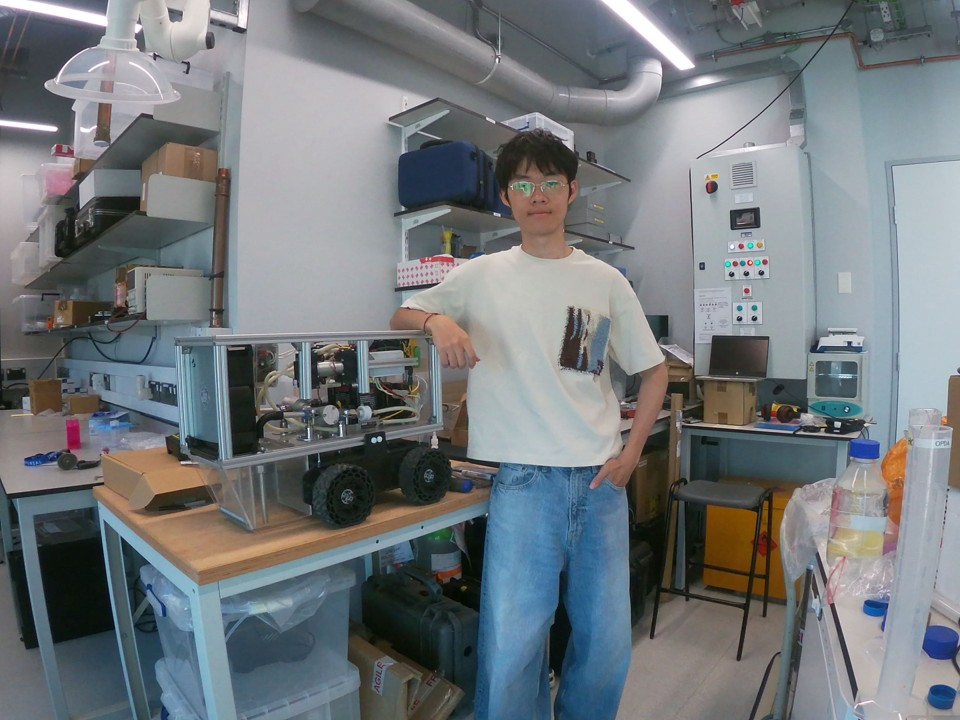

Robotics Engineering · University of Toronto
I design and build robotic & mechanical systems.
Hi, I'm Andy Wen, a Robotics Engineering undergraduate (AI Engineering Minor, 3..89 cGPA) at the University of Toronto. I work across mechanical CAD/FEA, electrical harnessing, PCB design, and embedded integration—from environmental sampling rovers to Formula SAE race cars. I value creating good designs grounded in real-world manufacturing and communicating my ideas clearly and concisely.
View projects Download résuméSelected work
Projects
FSAE Chassis FEA & Electrical Harnessing
Parameterized 50+ chassis wireframe coordinates in CATIA, ran multi-load FEA on 1020 steel bellcrank tabs, and built FSAE-compliant front main wire harnesses.

ERG Surface Sampling ROVER
Remote-operated mobile sampling platform for non-exhaust road emissions, integrating dual PM2.5 cyclones, OPC-N3 sensing, and GoPro GPS/velocity telemetry.
Current Sense Amp & 5th-Order Filter PCB
Designed and routed a compact 50×50 mm 2-layer PCB combining a current-sense amplifier with a 3-stage, 1 kHz Butterworth-Bessel low-pass filter.
Automated Solar Panel Cleaning Mechanism
Led mechanical packaging and enclosure design for an electro-mechanical sweeping mechanism achieving 82% dust-removal efficiency across residential solar panels.
Track record
Experience & Education
University of Toronto Formula Racing (UTFR)
Chassis Subsystem Member (Apr. 2026 – Present) & Electrical Subsystem Member (Oct. 2025 – Mar. 2026)
- Optimized chassis structural mount tabs via 3DX CATIA FEA across impulse and heave load cases; parameterized 50+ wireframe coordinates using CATIA Design Tables.
- Machined torsional test rigs to empirically validate chassis stiffness and boundary conditions.
- Developed front main harness schematics and physical routing in RapidHarness, executing precision crimping and connector assembly to FSAE safety standards.
Imperial College London — Research Exchange Student
Hardware Integration & Robotics (Environmental Research Group)
- Designed and integrated the Remote Operated Vacuum for Environmental Research (ROVER) for compact mobile sampling of non-exhaust emissions.
- Combined dual cyclone filter sampling, GoPro HERO7 Silver road imaging/GPS telemetry, and an AlphaSense OPC-N3 particle sensor on Raspberry Pi.
- Authored the complete technical specification and plain-language operation manual for field researchers.
University of Toronto — BASc in Robotics Engineering
Minor in Artificial Intelligence Engineering
Relevant Coursework: Structures & Materials, Dynamics, Control Systems, Electronics for Robotics, Vector Calculus, Ordinary Differential Equations, Electrical Circuits, Computer Algorithms & Data Structures.
About
Background
I am a Robotics Engineering student at the University of Toronto pursuing a minor in AI Engineering. My work centers on bridging mechanical design and embedded electronics—turning CAD models and circuit schematics into tested, physical hardware.
More than just theoretical simulations and designing, I value end-to-end engineering where simulation meets physical validation. It's one thing to design a part that works in theory, but another to realize it under manufacturing and other constraints. I care about DfX, as well as communicating my designs clearly and concisely through good engineering documentation.
Toolbox
Skills
- CAD & Sim3DX CATIA, Fusion, FEA, LTspice
- ElectronicsAltium, RapidHarness, PCB Layout
- FabricationMachining, Rapid Prototyping, DFM
- Code & ToolsPython, MATLAB, R, SystemVerilog
- WorkflowDesign Tables, Technical Manuals